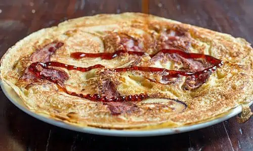

Delicious Pancake Recipe!

Description recipe
Savory Dutch Pancakes (Pannenkoeken) are satisfying for breakfast, lunch or even dinner.
This is not a “dutch baby” puffy pancake.
Keep reading to find out how to make a true Dutch Pancake.
Ingredients
- 1 2/3 cups (8.5 oz, 240g) all purpose flour
- 1.5 teaspoons (7g) baking powder
- 1.25 teaspoons salt (7 g)
- 1 large egg
- 2 cups (16oz, 480ml) milk
- 1/4 cup (2 oz, 56g) butter
- 4 oz (112g) speck (smoked proscuitto) or bacon of your choice
- 4 oz (112g) young Gouda cheese or cheese of your choice
Steps
- In a large bowl, whisk together the flour, baking powder and salt.
- Make a well in the center of the dry ingredients.
- Add the egg and half the milk to the well. Mix until the ingredients are combined.
- Slowly add the remaining milk.The texture should be like a thin pancake or crepe batter.
- Heat a large (12") non-stick skillet over medium. Melt a teaspoon of butter and swirl to coat the pan.
- Pour 1/2 cup of the batter into the pan and swirl to create a large thin pancake that covers the bottom of the pan.
- Place several slices of the speck or bacon over the top of the pancake. Cook until the top of the pancake is set.
- Flip the pancake over and cook until that side is browned. Flip back over so the speck is on top.
- Add a few slices of cheese, cover and allow the cheese to melt.
- Serve hot or hold in a warm oven while you make the remaining pancakes